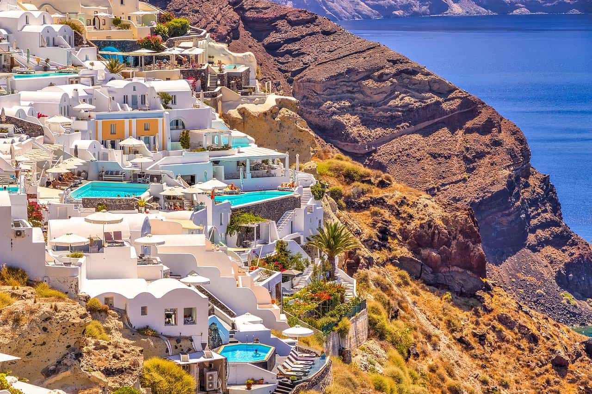
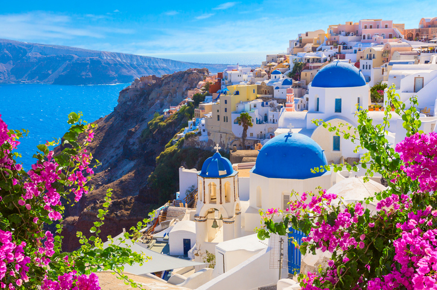
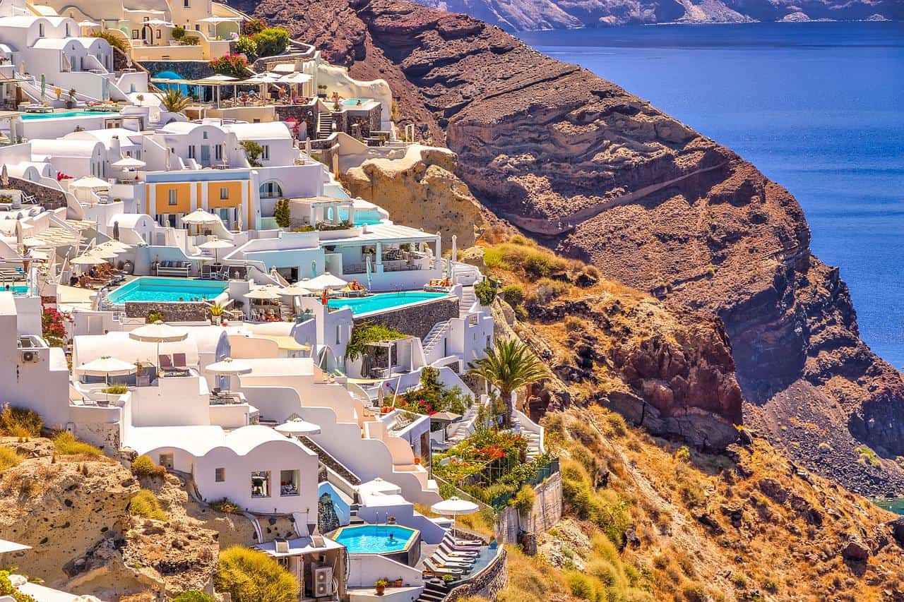
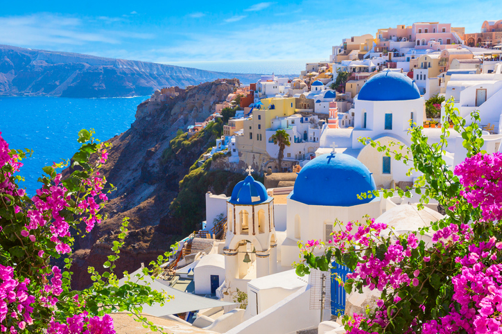

למה סנטוריני?
סנטוריני הוא אחד המקומות היפים והמרהיבים בעולם, אי קטן בלב הים האגאי, שבו בתים לבנים עם גגות כחולים תלויים על צוקי געש מול ים כחול אינסופי. האווירה באי שקטה, רומנטית ונעימה, וכל פינה בו נראית כמו גלויה.
סמטאות אואה (Oia) הציוריות מובילות לתצפיות מדהימות על השקיעות המפורסמות של סנטוריני, שם השמש טובעת אל תוך הים ומציפה את העיירה באור כתום-זהוב. מומלץ לבקר גם בעיירה פירא (Fira), ליהנות מיין מקומי ביקב עתיק, ולטייל בחופים הוולקניים השחורים של קאמארי ופריסה.
סנטוריני משלבת שלווה יוונית, אסתטיקה מושלמת ונוף מהיפים בעולם. יעד מושלם לחופשה זוגית חלומית.

 


